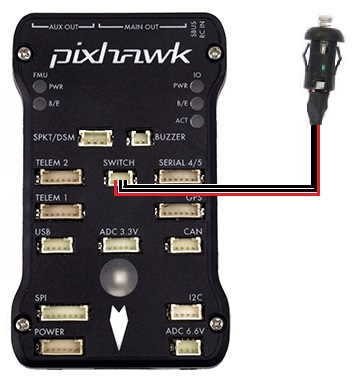

Safety Switch¶
{kind=link}
A safety switch can be used to enable/disable the outputs to motors and servos. The switch controls the “Safety” state of the vehicle. When in this state, motors are prevented from operating (except in Plane’s MANUAL mode if force armed and the BRD_SAFETY_MASK enables outputs controlling the motors), a pre-arm error condition is generated to prevent accidental arming, and servo outputs have their PWM disabled.
LED meaning¶
Constant blinking - system is initialising
Intermittent blinking - system is ready but in the “Safety” state. press the safety switch to enable output to the motors and control surfaces if already armed, or to cancel the pre-arm error condition that prevents arming.
Solid - safety switch has been pressed, motors and servos are able to move once the vehicle is armed.
Configuring the Safety Switch¶
BRD_SAFETY_DEFLT = 0 to disable the switch for systems not equipped.(
BRD_SAFETYENABLEin older firmware versions)BRD_SAFETYOPTION. This bitmask controls the behavior of the safety button. It allows you to control if the safety button can be used to enable the safety safety state and/or disable it, and whether the button is only active when disarmed, and to force entry back to the safety on state when you disarm. The default behaviour is for the button to enter or exit the safety state, only when disarmed.
BRD_SAFETY_MASK can be used to set which individual channels remain enabled with the safety switch. This allows limited control surface movements to check correct operation on the ground. Motor outputs will remain disabled in all stabilized flight modes.
Note
Being in the “Safety” state
{kind=link}
BRD_SAFETYOPTION This bitmask controls the operational limits of the safety button. It allows you to control if the safety button can be used for “Safety” state enable and/or disable, and whether the button is active if armed. Also, if the “Safety” state is forced on upon disarming.
Using the Safety Switch to force I/O board firmware update¶
If the safety switch is held down for the first few seconds after the autopilot is powered up, the I/O firmware is reloaded, if the autopilot includes an IOMCU.
This is normally not required but in some rare cases is required after a firmware upload if you hear the “Start up Failed” sound after startup (see Sounds wiki page).
Note
Many autopilots have two CPUs, the main CPU (aka FMU) is where ArduPilot runs. The IOMCU is a separate I/O CPU which is responsible for some I/O including PWM outputs to the MAIN OUT channels. Other autopilots do not have an IOMCU, just the main CPU.
[copywiki destination=”plane,copter,rover,blimp”]